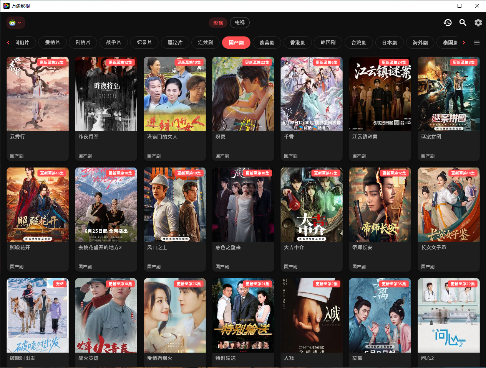
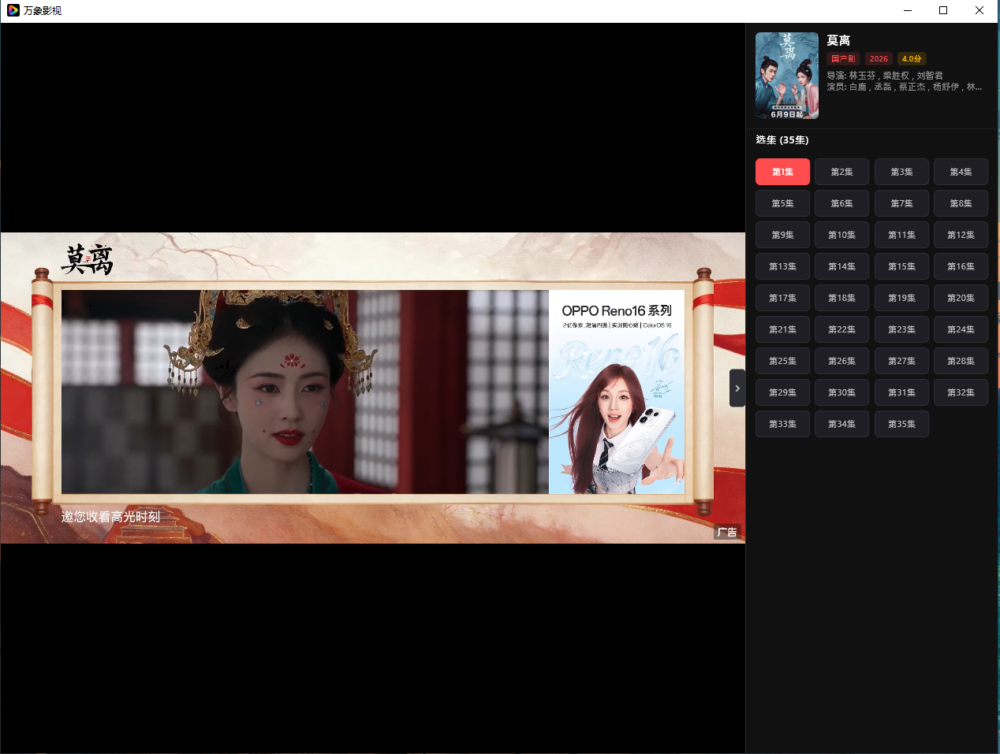
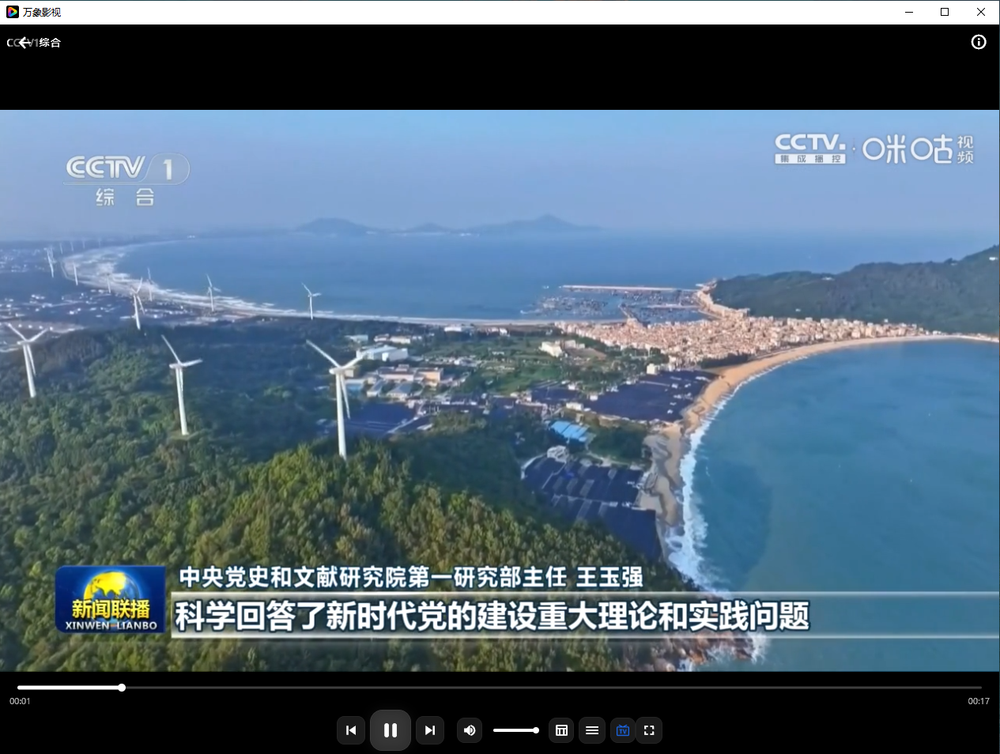
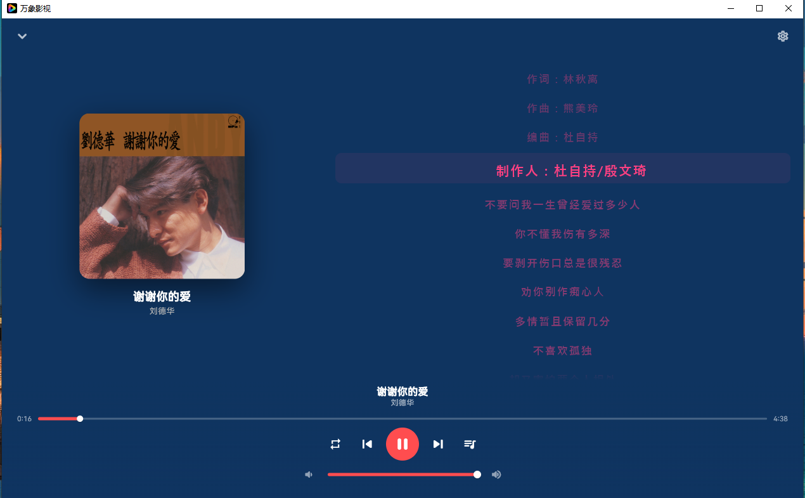
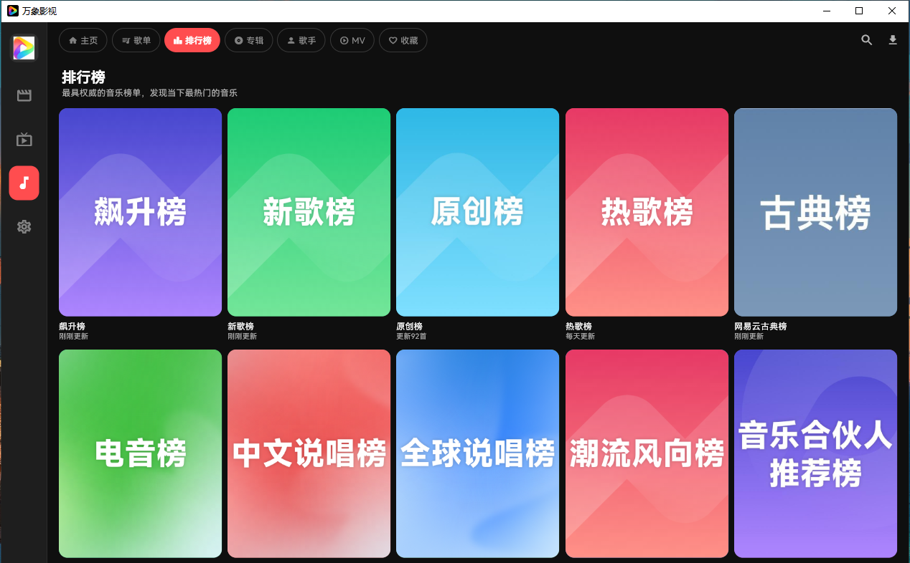
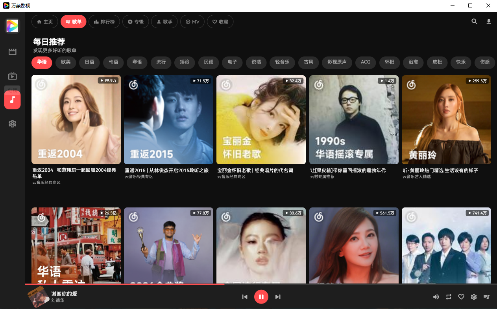
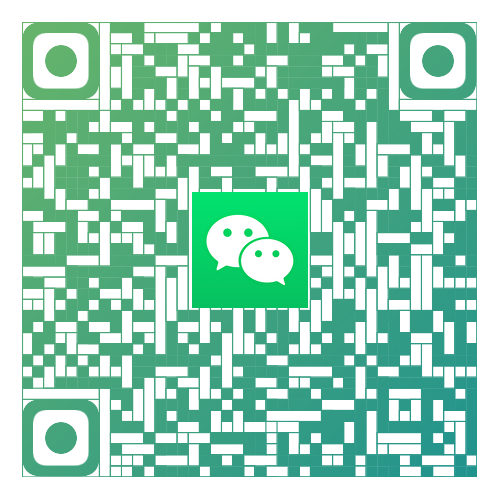
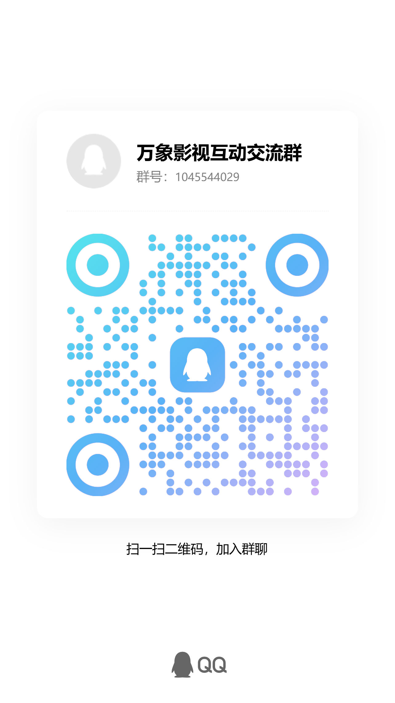

基于 Flutter + media_kit + libmpv，支持 H.265/HEVC 硬解、4K HDR 播放。 自由添加 Apple CMS / TVBOX 影视源，支持电视直播 M3U/TXT 源 + EPG 节目指南。 内置音乐模块，接入落雪音乐音源，支持搜索、播放、歌词、歌单等完整音乐体验。 多源并行搜索、青少年模式、全平台数据互通。






打开设置 → 源管理 → 点击右上角 + 号。支持两种模式：
💡 添加多个源可实现并行搜索，某一源失效时自动从其他源获取结果
添加电视源后在顶部切换到「电视」标签：
M3U / TXT 格式直播源，频道自动分组管理顶部切换到「音乐」标签，首次使用需导入落雪音乐音源脚本：
.js 音源脚本应用启动后自动检测 GitHub Releases 最新版本，检测到新版本后弹出下载提示。也可在设置中手动检查更新。Windows 用户推荐使用安装器版本（自动创建桌面快捷方式 + 卸载入口）。
如果你觉得好用，欢迎捐赠支持。所有项目永久免费、无广告。

打赏金额随心，每一份支持都是我们前进的动力
遇到问题？想要建议？欢迎加入 QQ 群与其他用户交流。
